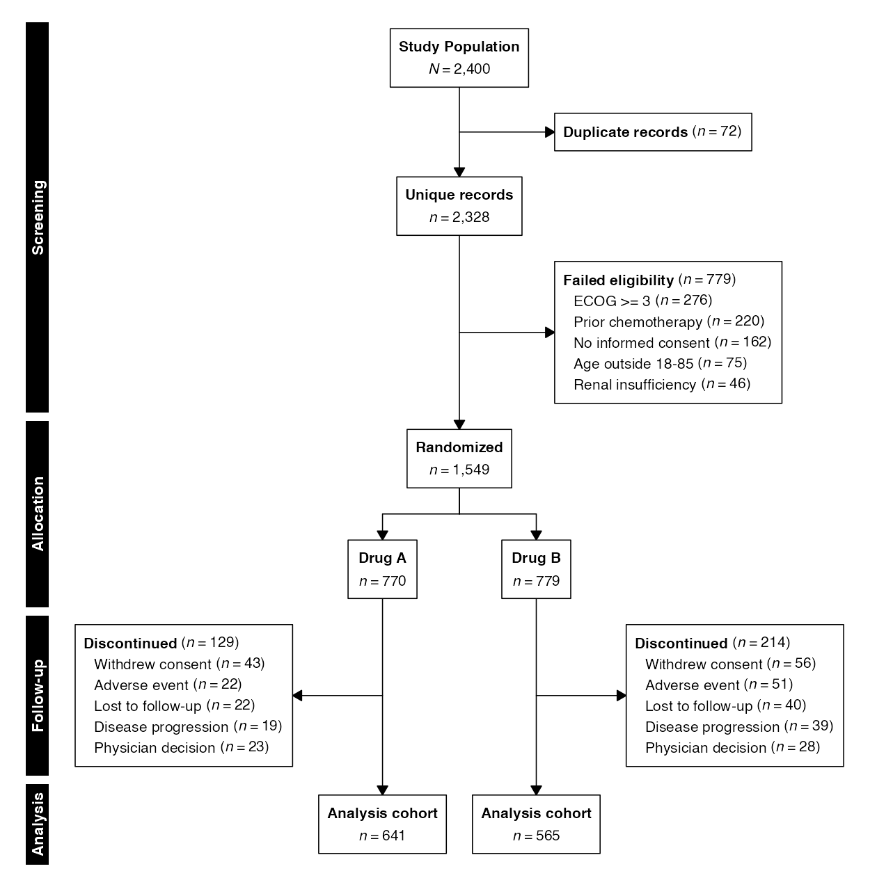
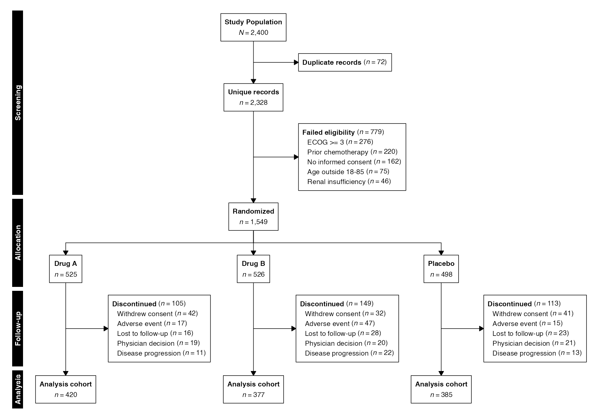
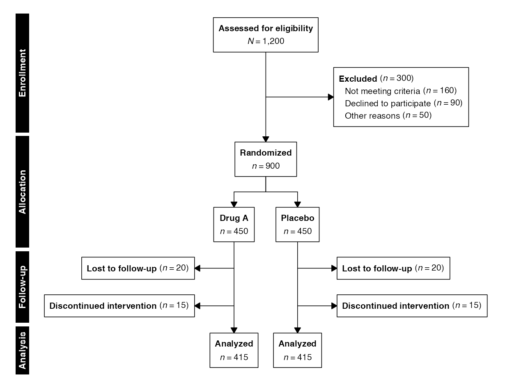
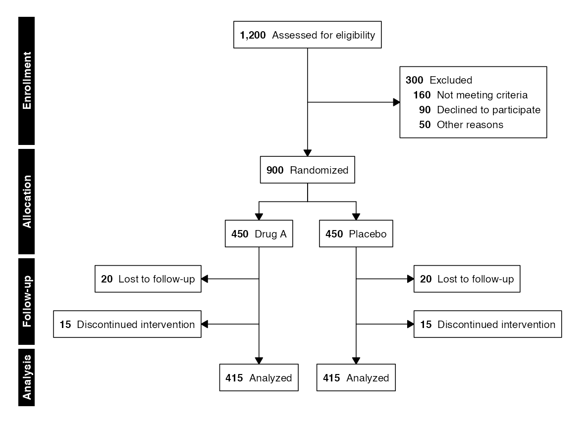
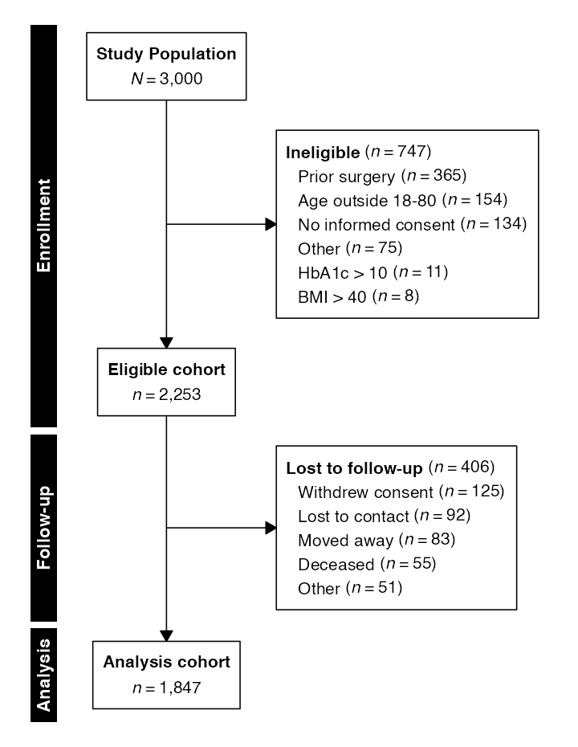
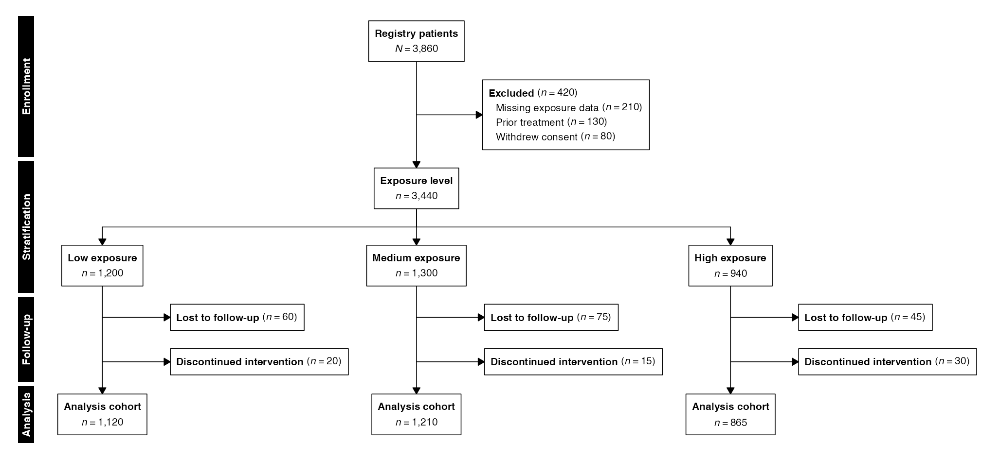
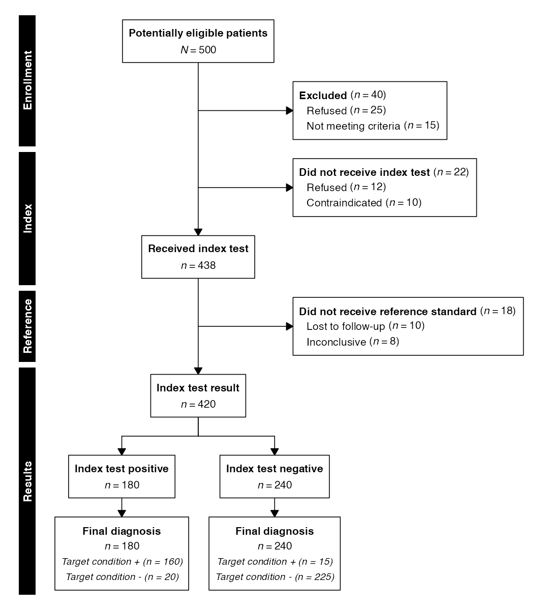

Enrollment and flow diagrams provide a complete, transparent account of participant disposition throughout a clinical study. Reporting guidelines developed by the EQUATOR Network—including CONSORT for randomized trials, STROBE for observational cohorts, and STARD for diagnostic accuracy studies—mandate structured diagrams that trace participant flow from initial assessment through final analysis, documenting every exclusion with counts and reasons.
In selecta, enrollment diagrams are built around the
following core functions:
| Function | Purpose |
|---|---|
enroll() |
Establish the starting cohort from data or a manual count |
allocate() / stratify()
|
Split into randomized arms (CONSORT) or strata (STROBE) |
assess() |
Record receipt of a test or procedure (STARD) |
Thus, the enrollment pipeline adheres to the following basic structure:
enroll(data, id) |>
phase("Enrollment") |>
exclude(label, criterion, reasons) |>
phase("Allocation") |>
allocate(column) |>
endpoint(label) |>
flowchart()where enroll() establishes the starting cohort (from
data or a manual count), pipeline functions define exclusion criteria
and structural elements, and flowchart() renders the final
diagram. This vignette demonstrates the package’s capabilities across
three EQUATOR guidelines using both data-driven and manual construction
modes.
n.b.: To ensure correct font rendering and figure sizing, the diagrams below are displayed using a vignette-only helper function (
queue_flow()) that applies recommended dimensions fromrecdims()via theragggraphics device, with the standard output function applied afterwards (flowchart()). In practice, replace thisqueue_flow()/flowchart()workflow with a call toflowsave()for equivalent printed results:Using
flowsave()ensures that the figure dimensions are always large enough to accommodate the diagram content, and it is the preferred method for saving flow diagram outputs inselecta.
Preliminaries
The examples in this vignette use the built-in datasets included with
selecta:
library(selecta)
library(data.table)
data(selectaex0)
data(selectaex2)
data(selectaex3)
data(selectaex6)Each dataset simulates a clinical study with columns for patient
identifiers, eligibility flags, treatment assignments, and follow-up
outcomes. The numeric suffix indicates the number of treatment arms:
selectaex0 represents an observational cohort (no
randomization), while selectaex2, selectaex3,
and selectaex6 represent two-, three-, and six-arm
randomized trials, respectively.
Operating Modes
The package supports two operating modes:
| Mode | Entry Point | Counts | Cohort Extraction |
|---|---|---|---|
| Data | enroll(data, id) |
Computed from data | Available via cohort()
|
| Manual | enroll(n = 500) |
Supplied by user | Not available |
In data mode, participant counts and exclusion
reasons are computed directly from the dataset. This approach is
reproducible, auditable, and enables downstream cohort extraction with
cohort(). In manual mode, the analyst
supplies all counts explicitly—useful for diagrams constructed from
published summary statistics or when the source data are not available
in R.
CONSORT — Randomized Controlled Trials
The CONSORT (Consolidated Standards of Reporting Trials) statement requires a flow diagram showing the number of participants at each stage of a randomized trial: enrollment, allocation, follow-up, and analysis. The diagram must report exclusion counts with reasons at each stage and the final number analyzed per arm.
Example 1: Data-Driven Two-Arm Trial
The most common CONSORT diagram involves a two-arm parallel trial. In data mode, counts are derived automatically from the dataset:
example1 <- enroll(selectaex2, id = "patient_id") |>
phase("Screening") |>
exclude("Duplicate records", criterion = is_duplicate == TRUE,
included_label = "Unique records") |>
exclude("Failed eligibility", criterion = eligible == FALSE,
reasons = "exclusion_reason",
included_label = "Eligible cohort") |>
phase("Allocation") |>
allocate("treatment") |>
phase("Follow-up") |>
exclude("Discontinued", criterion = discontinued == TRUE,
reasons = "discontinuation_reason") |>
phase("Analysis") |>
endpoint("Analysis cohort")
flowchart(example1)
Each exclude() call filters the dataset according to the
supplied expression, and the resulting counts populate the diagram
automatically. The reasons argument accepts either a column
name (for data-driven sub-reason counts) or a named numeric vector (for
manual specification). The included_label argument adds a
labeled count box below the exclusion, showing the number remaining
after that step.
The allocate() function splits the flow into parallel
arms based on the named column. For a two-arm trial, arms are positioned
symmetrically about the center axis with exclusion side boxes to the
left and right.
Example 2: Data-Driven Three-Arm Trial
Trials with three or more arms follow the same syntax. The layout automatically adapts to accommodate additional columns:
example2 <- enroll(selectaex3, id = "patient_id") |>
phase("Screening") |>
exclude("Duplicate records", criterion = is_duplicate == TRUE,
included_label = "Unique records") |>
exclude("Failed eligibility", criterion = eligible == FALSE,
reasons = "exclusion_reason",
included_label = "Eligible cohort") |>
phase("Allocation") |>
allocate("treatment") |>
phase("Follow-up") |>
exclude("Discontinued", criterion = discontinued == TRUE,
reasons = "discontinuation_reason") |>
phase("Analysis") |>
endpoint("Analysis cohort")
flowchart(example2)
Example 3: Manual Mode
When source data are unavailable, all counts can be supplied directly. Manual mode is particularly useful for reproducing published diagrams or constructing diagrams from summary tables:
example3 <- enroll(n = 1200, label = "Assessed for eligibility") |>
phase("Enrollment") |>
exclude("Excluded", n = 300,
reasons = c("Not meeting criteria" = 160,
"Declined to participate" = 90,
"Other reasons" = 50),
included_label = "Eligible cohort") |>
phase("Allocation") |>
allocate(labels = c("Drug A", "Placebo"), n = c(450, 450)) |>
phase("Follow-up") |>
exclude("Lost to follow-up", n = c(20, 20)) |>
exclude("Discontinued intervention", n = c(15, 15)) |>
phase("Analysis") |>
endpoint("Analyzed")
flowchart(example3)
In manual mode, allocate() requires explicit
labels and n arguments rather than a column
name. When exclude() is called after allocation, the
n argument accepts a vector with one value per arm.
Example 4: Count-First Display Mode
The count_first parameter reformats all boxes to place
the bold count before the label—e.g., “450 Drug A” rather than
“Drug A (n = 450)”:
flowchart(example3, count_first = TRUE)
STROBE — Observational Cohort Studies
The STROBE (Strengthening the Reporting of Observational Studies in
Epidemiology) statement covers cohort, case-control, and cross-sectional
studies. Unlike CONSORT, observational studies do not involve
randomization; instead, participants are stratified by exposure or
another grouping variable. The stratify() function replaces
allocate() in this context, using the more general term
appropriate to non-randomized designs.
Example 5: Single-Arm Cohort
Before introducing stratification, consider the simplest
observational diagram: a single cohort carried through eligibility and
follow-up without any grouping. In data mode, selectaex0
provides an observational dataset with no treatment arms:
example5 <- enroll(selectaex0, id = "patient_id") |>
phase("Enrollment") |>
exclude("Ineligible", criterion = eligible == FALSE,
reasons = "exclusion_reason",
included_label = "Eligible cohort") |>
phase("Follow-up") |>
exclude("Lost to follow-up", criterion = lost_to_followup == TRUE,
reasons = "followup_loss_reason") |>
phase("Analysis") |>
endpoint("Analysis cohort")
flowchart(example5)
With no allocate() or stratify() call, the
diagram remains a single vertical column and each exclusion is drawn as
a side box. This is the minimal building block from which all other
layouts extend.
Example 6: Exposure-Stratified Cohort
The following diagram depicts a registry-based observational cohort stratified by exposure level, with per-arm exclusion labels:
example6 <- enroll(n = 3860, label = "Registry patients") |>
phase("Enrollment") |>
exclude("Excluded", n = 420,
reasons = c("Missing exposure data" = 210,
"Prior treatment" = 130,
"Withdrew consent" = 80),
included_label = "Eligible cohort") |>
phase("Stratification") |>
stratify(labels = c("Low exposure", "Medium exposure", "High exposure"),
n = c(1200, 1300, 940),
label = "Exposure level") |>
phase("Follow-up") |>
exclude("Lost to follow-up", n = c(60, 75, 45)) |>
exclude("Discontinued intervention", n = c(20, 15, 30)) |>
phase("Analysis") |>
endpoint("Analysis cohort")
flowchart(example6)
The stratify() function is the guideline-agnostic
generalization of allocate(). In fact,
allocate() is implemented as a thin wrapper around
stratify() with a default label of “Randomized.” Both
produce identical diagram structures; the distinction is semantic,
reflecting whether the arm assignment was randomized or
observational.
STARD — Diagnostic Accuracy Studies
The STARD (Standards for Reporting of Diagnostic Accuracy Studies) flow diagram tracks participants through index test administration, reference standard evaluation, and final diagnostic classification. Two features distinguish STARD diagrams from CONSORT: inverted exclusion labels (e.g., “Did not receive index test” rather than “Received index test”) and terminal cross-classification of results.
Example 7: Index Test and Reference Standard
The assess() function provides the inverted label
semantics required by STARD. Given a label such as “Index test,” it
automatically generates the side box label “Did not receive index test”
and the count box label “Received index test”:
example7 <- enroll(n = 500, label = "Potentially eligible patients") |>
phase("Enrollment") |>
exclude("Excluded", n = 40,
reasons = c("Refused" = 25,
"Not meeting criteria" = 15)) |>
phase("Index") |>
assess("Index test", not_received = 22,
reasons = c("Refused" = 12,
"Contraindicated" = 10)) |>
phase("Reference") |>
assess("Reference standard", not_received = 18,
reasons = c("Lost to follow-up" = 10,
"Inconclusive" = 8)) |>
phase("Results") |>
stratify(labels = c("Index test positive", "Index test negative"),
n = c(180, 240),
label = "Index test result") |>
endpoint("Final diagnosis",
breakdown = list(
c("Target condition +" = 160, "Target condition -" = 20),
c("Target condition +" = 15, "Target condition -" = 225)
))
flowchart(example7)
The endpoint() function accepts a breakdown
argument to display sub-classifications within the terminal box (or
boxes). A single named numeric vector itemizes one terminal box; a list
of named numeric vectors (one per arm) itemizes each per-arm box after a
split, as in Example 6 above. In default grid outputs,
these are rendered in a smaller italic font to visually distinguish them
from the main count. For STARD diagrams, this is how the final
target-condition breakdown is shown beneath each index-test result.
Cohort Extraction
In data mode, the cohort() function returns the dataset
remaining after all exclusion criteria have been applied, enabling a
seamless transition from diagram construction to statistical
analysis:
When arms are present, cohort() returns the combined
dataset by default. Per-arm datasets are available via
split = TRUE or by specifying a single arm:
arm_data <- cohort(example1, split = TRUE)
vapply(arm_data, nrow, integer(1L))
#> Drug A Drug B
#> 641 565The cohorts() function returns stage-by-stage snapshots
of the dataset at each exclusion step. Each element is a list with
included, excluded, n_included,
and n_excluded, allowing inspection of either the
participant counts or the underlying datasets at each step:
snapshots <- cohorts(example1)
names(snapshots)
#> [1] "_start" "Duplicate records" "Failed eligibility" "_arm" "Discontinued" "Analysis cohort"A specific stage can be accessed by name, with counts and datasets available as named elements:
snapshots[["Failed eligibility"]]$n_included
#> [1] 1549
snapshots[["Failed eligibility"]]$n_excluded
#> [1] 779Inspecting the Diagram Structure
Before rendering, the computed graph can be inspected
programmatically. The print() method provides a text
summary of the pipeline:
print(example1)
#> selecta flow (data mode)
#> Starting N: 2,400
#> Steps: 9
#> --- Screening ---
#> [2] exclude: "Duplicate records"
#> [3] exclude: "Failed eligibility"
#> --- Allocation ---
#> [5] stratify: treatment
#> label: "Randomized"
#> --- Follow-up ---
#> [7] exclude: "Discontinued"
#> --- Analysis ---
#> [9] endpoint: "Analysis cohort"The summary() method returns a tabular representation of
every node in the diagram:
summary(example1)
#> phase role arm text n
#> <int> <char> <int> <char> <int>
#> 1: 1 main NA Study Population 2400
#> 2: 2 side NA Duplicate records 72
#> 3: 2 main NA Unique records 2328
#> 4: 3 side NA Failed eligibility 779
#> 5: 4 alloc NA Randomized 1549
#> 6: 5 arm 1 Drug A 770
#> 7: 5 arm 2 Drug B 779
#> 8: 6 side 1 Discontinued 129
#> 9: 6 side 2 Discontinued 214
#> 10: 7 endpoint 1 Analysis cohort 641
#> 11: 7 endpoint 2 Analysis cohort 565The recdims() function returns the recommended figure
dimensions (in inches) without rendering:
recdims(example1)
#> width height
#> 8.3 8.5Saving to File
The flowsave() function saves the diagram to a file
(PDF, PNG, SVG, or TIFF) with auto-computed dimensions:
Explicit dimensions override the automatic calculation:
flowsave(example1, "consort_2arm.pdf", width = 10, height = 12)All visual parameters accepted by flowchart() are also
accepted by flowsave():
flowsave(example1, "consort_2arm_cf.pdf",
count_first = TRUE, cex = 1.0, cex_side = 0.8)Further Reading
- Systematic Reviews: PRISMA and MOOSE diagrams with top-level source convergence
- Split-and-Recombine Diagrams: Hybrid topologies for screening validation and exposure classification
- Advanced Workflows: Factorial (nested-split) designs and hierarchical exclusion reasons
- Graphviz Export: DOT output for Graphviz/DiagrammeR rendering